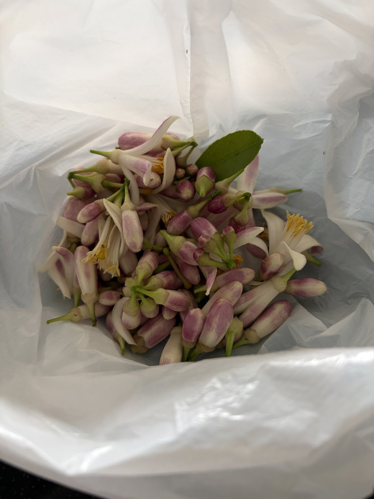
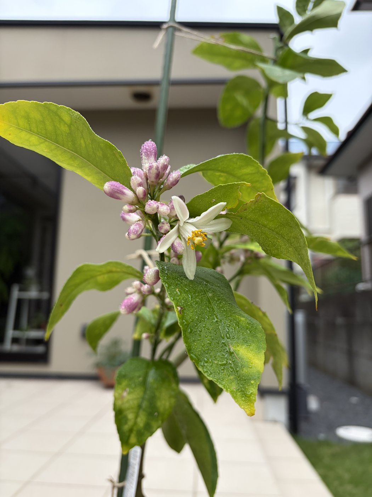
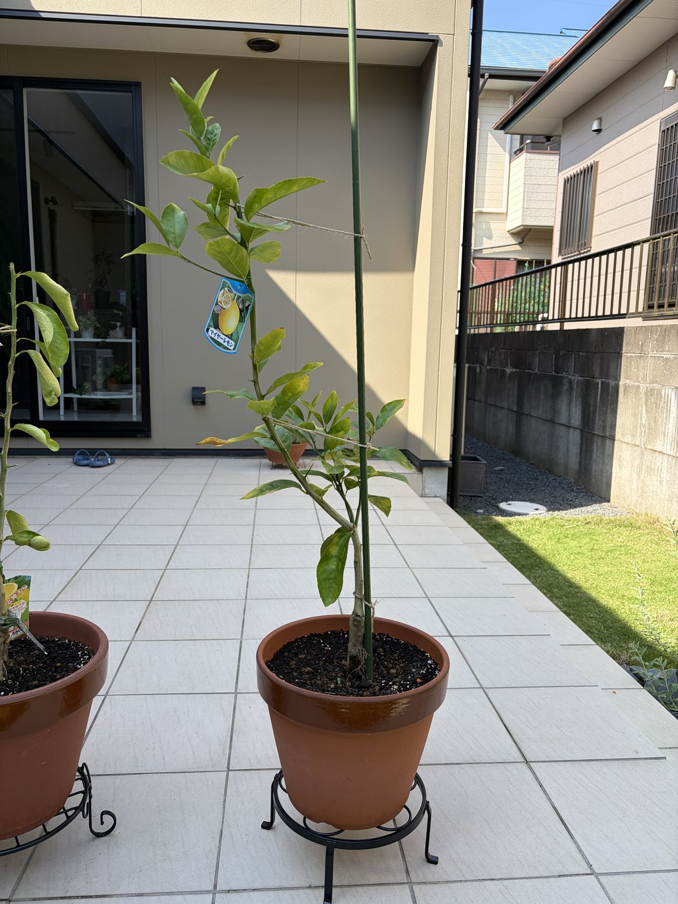
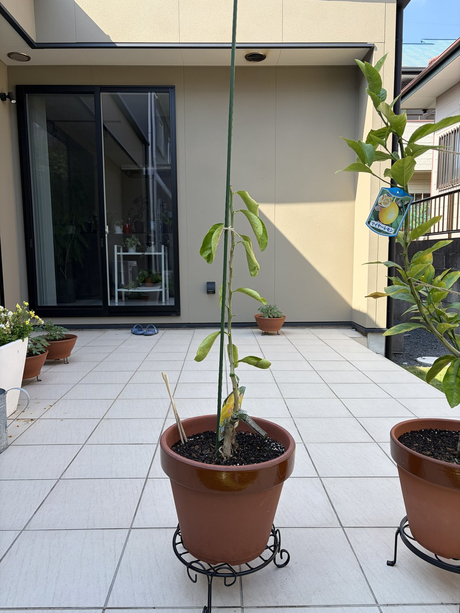

{kind=link}

ガイドの方針「1年目の花は全部摘む」に従い、開花した花とつぼみを全て摘み取った(摘花)。回収したのは写真のとおりざっと30〜40輪ほどで、開いた花と紫紅色のつぼみが混在。摘む際に葉が1枚混じった程度で、枝葉への大きな傷みはなし。これで木のエネルギーを花・実ではなく根と枝葉の充実に回す。
注意:今後もつぼみが上がってきたら都度摘み取る。最初の収穫は早くて2027年秋、本格的には2028年以降なので焦らない。摘花直後は切り口から病気が入らないよう、梅雨〜盛夏の水やり(朝)と葉裏のアゲハ・ハダニ確認を継続する。
(この日は璃の香の記録なし)
{kind=link}

6/13時点では花・つぼみは見られなかったが、枝先に白い花が1輪開花し、周囲に紫紅色を帯びたつぼみが多数ついた。レモンらしい5弁花で、雄しべの葯は黄色。葉には水滴が残り(朝の水やりまたは雨)、下葉の一部に黄化が続く。
注意:開花・結実は木を消耗させるため、ガイドの1年目方針どおり数日内に全て摘花する予定(→ 7/04 実施)。ここでは初開花の記録として残す。花が咲くこと自体は根が活着し木が充実してきたサインで、順調な兆候。
(この日は璃の香の記録なし)
{kind=link}

植え付けから約1か月。葉色は濃いまま保たれ、明るい黄緑の新芽が複数展開している。根が活着して成長点が動いている状態。下葉が数枚黄ばむが、古い葉の更新で量も少なく問題なし。実・花はなし(枝に下がっているのは品種ラベルの札)。
注意:ラベルの紐が枝に食い込む前に外す。これから梅雨〜盛夏は鉢が乾きやすいので朝の水やりを徹底し、タイルの照り返し・高温に注意。新芽はアゲハの産卵を受けやすいので、葉裏と新芽を定期的に確認する。
{kind=link}

植え付けから約1か月。もとからひょろ長く(徒長気味)、幹の中間に葉が少ない樹形。上部には新しい枝と鮮やかな新葉が伸びており、成長自体は続いている。一方で中〜下部の葉に黄ばみ・しおれが見られ、葉数・密度はマイヤーに見劣りする。
注意:下葉の黄化が広がるか止まるかを2週間ごとに観察。広がる・落葉が進む場合は水のやり過ぎや根傷みを疑う。徒長の改善にはよく日へ当てること。Web縮小版では分からないハダニ・カイガラ等は、葉裏を直接チェックする。

植え付け直後。植え付け手順スライドのとおりに作業。

植え付け直後。植え付け手順スライドのとおりに作業。